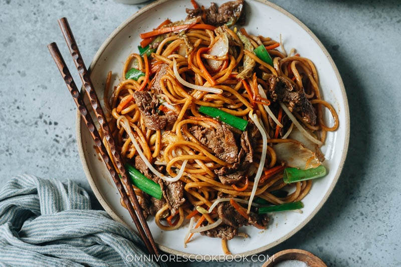

Beef Lo Mein

Description
Tender slices of beef mingling with thick lo mein noodles, vegetables, and a savory sauce are perfect for tonight’s dinner in this beef lo mein. And it takes less time than takeout to put on your table!
Ingredients
- 8 oz (225 g) flank steak , cut against the grain into 1/4” (4 cm) thick slices
- 8 oz (225 g) fresh lo mein noodles (or 6 oz / 170 g dried lo mein / chow mein noodles)
Marinade
- 1 teaspoon Shaoxing wine (or dry sherry)
- 1/2 teaspoon dark soy sauce
- 1 teaspoon cornstarch
Sauce
- 1 tablespoon light soy sauce (or soy sauce)
- 1/2 tablespoon dark soy sauce
- 1/2 tablespoon oyster sauce
- 2 teaspoons sugar
- 1/2 teaspoon sesame oil
Stir Fry
- 3 tablespoons peanut oil , divided
- 2 cloves garlic , minced
- 4 green onions , sliced into 1” (2 cm) pieces, greens and whites separated
- 1/2 large carrot , cut into matchsticks
- 5 pieces napa cabbage leaves , chopped
- 1/2 cup bean sprouts
Instructions
- Combine the steak with the marinade ingredients in a medium-sized bowl. Mix until well coated and marinate for 15 minutes.
- Mix the sauce ingredients in a small bowl until the sugar is dissolved.
- Cook the noodles according to package instructions. Rinse under running cold water to stop cooking. Drain and toss with a drizzle of sesame oil to prevent sticking.
- Add 1 tablespoon of oil to a large skillet and heat over high heat until hot. Spread the marinated steak without overlapping. Cook without disturbing until the bottom turns golden brown, 1 minute or so. Flip to cook the other side until browned but the inside is still a bit pink. Transfer the beef onto a big plate and set aside.
- Reduce the heat to medium-high and add 1 tablespoon of oil. Add the garlic. Stir a few times to release the fragrance, about 30 seconds.
- Add the white part of the green onion, onions, carrots, and cabbage. Stir fry until the cabbage begins to wilt, 2 to 3 minutes.
- Add the noodles and drizzle the remaining 1 tablespoon oil on top. Toss the noodles a few times to mix with the oil.
- Pour in the sauce and toss together everything.
- Add back the cooked steak and toss again, until the sauce is fully absorbed.
- Add the bean sprouts and green onion greens. Stir a few times until the bean sprouts just wilted but remain crispy.
- Transfer everything to serving plates and serve hot.